Fig1 · R7C3B/Figure_1
CURRENT_SUBMISSION_CANDIDATE_REFERENCE_COPY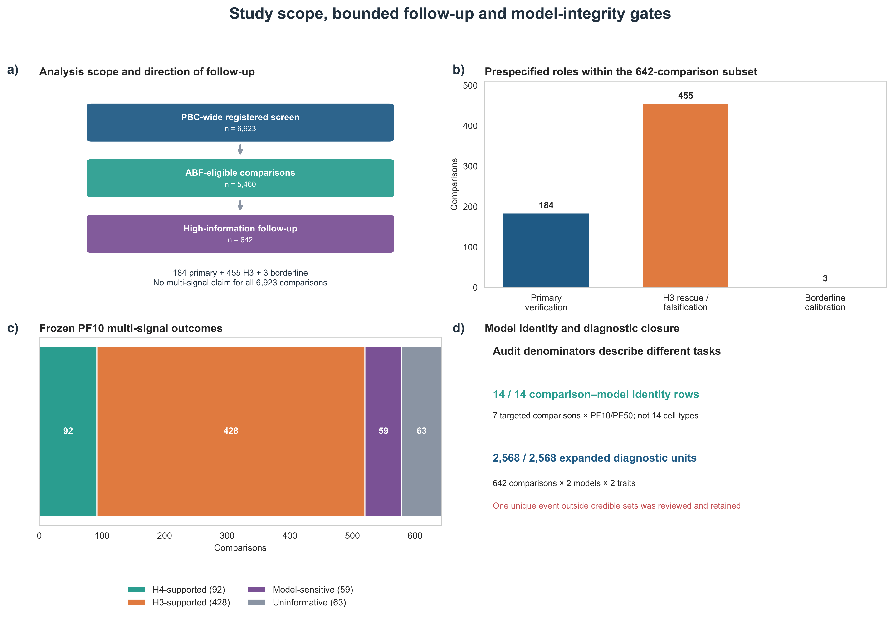
流程、队列柱图、642结局及身份诊断。
数值：6923→5460→642；184/455/3；92/428/59/63；14模型身份行；2568诊断单元。
注册screen是项目内冻结范围，不是外部preregistration；多信号结论仅对642子集。
PDF · PNG
Fig2 · R7C3B/Figure_2
CURRENT_SUBMISSION_CANDIDATE_REFERENCE_COPY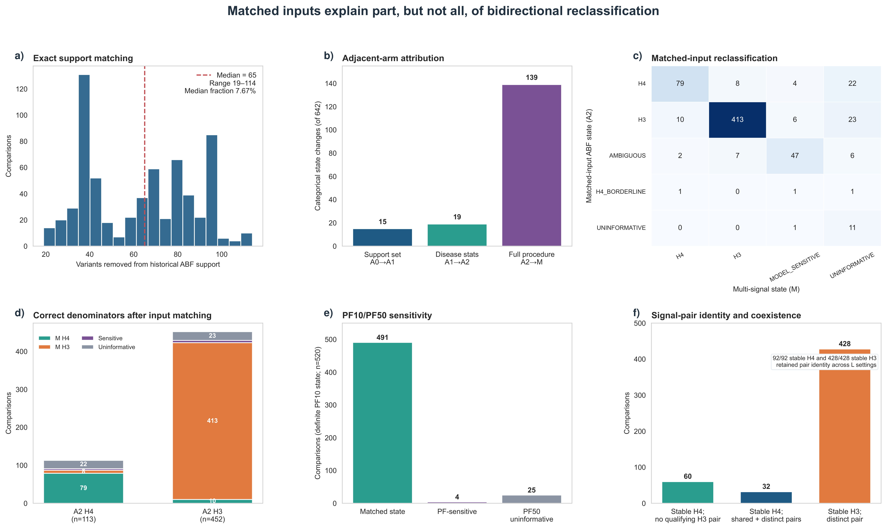
支持匹配、三段归因、状态矩阵、A2分母、PF敏感性及signal-pair并存。
数值：15/19/139；H4=113、H3=452；8/10严格转移；491/4/25 PF结局。
不称真实数据的错误修正率；32个H4比较可同时有distinct pair。
PDF · PNG
Fig2 · R7B2A/R7B2A_Figure2_attribution_prototype
HISTORICAL_PROTOTYPE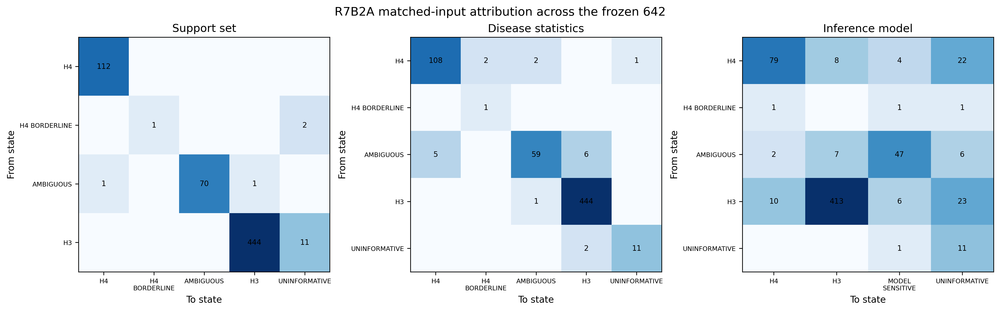
三热图：A0→A1支持集、A1→A2疾病统计、A2→M全推断流程。
数值：三个矩阵各642；状态改变15/19/139；同输入strict H4→H3=8、H3→H4=10、stable H4=79、H3=413。
15+19+139不能简单相加为唯一受影响比较；真实数据无因果真值；A2→M不是只改变因果变异个数的纯对照。
PDF · PNG · SVG
Fig2 · R7B1B_v2/Figure_R7B1B_1_bidirectional_reclassification
HISTORICAL_PROTOTYPE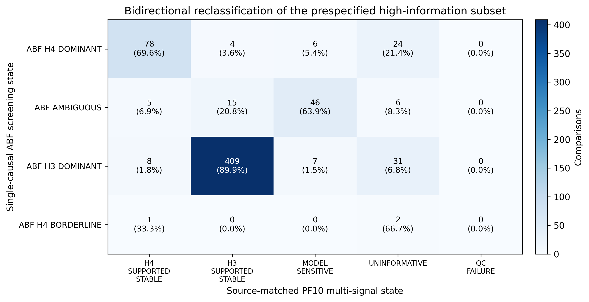
四类历史ABF行到五类PF10多信号列；每格计数及行百分比。
数值：行总数112/72/455/3；历史stable H4=78，H4→H3=4，H3→H4=8，stable H3=409；列和92/428/59/63/0。
尚未采用R7B2A同输入A2对照；不能把4/8直接写成当前8/10。642是高信息子集，不是全部6923比较。
PDF · PNG
Fig2 · R7B1B_v2/Figure_R7B1B_2_cohort_separated_outcomes
HISTORICAL_PROTOTYPE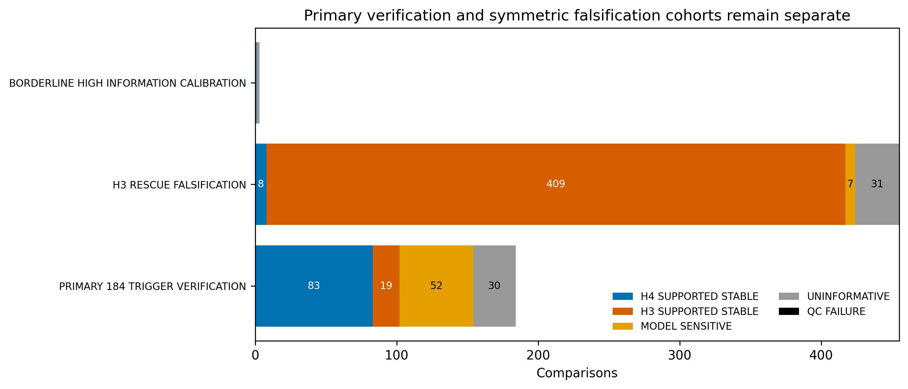
按184 primary、455 H3 rescue、3 borderline分开堆叠PF10结局。
数值：Primary 83/19/52/30；H3队列8/409/7/31；borderline 1/0/0/2；总计642。
角色是预冻结筛查队列，不是匹配后A2 H4=113/H3=452分母；不同层级数字不能互换。
PDF · PNG
Fig3 · R7C3B/Figure_3
CURRENT_SUBMISSION_CANDIDATE_REFERENCE_COPY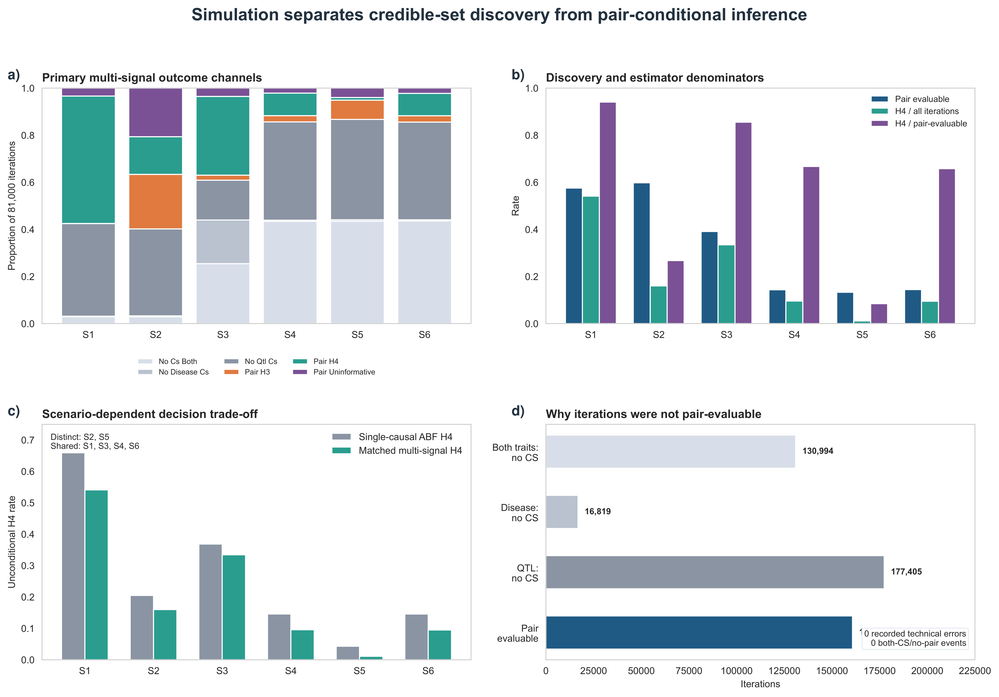
通道占比、发现/推断分母、方法trade-off及no-CS原因。
数值：486000；160782 pair-evaluable；325218 no-CS；0记录技术错误。
跨场景误共享与共享恢复同时呈代价；未证明通用算法优越。
PDF · PNG
Fig3 · R7B2A/R7B2A_Figure3_simulation_channels_prototype
HISTORICAL_PROTOTYPE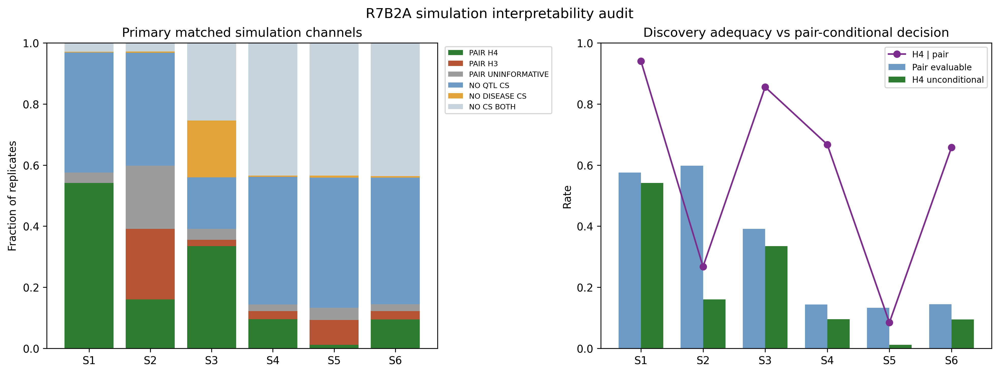
左六场景pair/no-CS通道占比；右pair-evaluable、H4 unconditional和H4 conditional-on-pair。
数值：486000迭代；160782 pair-evaluable=33.08%；325218 no-CS；场景可评价率13.29%–59.79%。
no-CS不等于软件错误；conditional H4不等于总体检出率；不遗漏共享场景的恢复代价。
PDF · PNG · SVG
Fig3 · R7B1C/Figure_R7B1C_1_scenario_H4_decisions
HISTORICAL_PROTOTYPE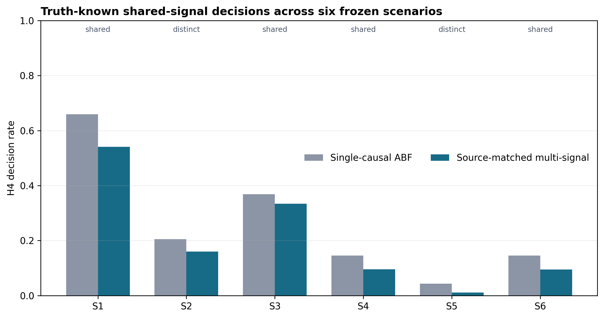
S1–S6真值已知场景；ABF与source-matched多信号H4决策率柱形对照。
数值：S2 distinct：20.50%→16.00%；S5 distinct：4.32%→1.12%；S1 shared：65.94%→54.12%。
这是全部replicates无条件决策率；没有pair时不构成可评价的模型分类。共享恢复同时下降，不能宣称普遍优越。
PDF · PNG
Fig3 · R7B1C/Figure_R7B1C_2_LD_stratified_decisions
HISTORICAL_PROTOTYPE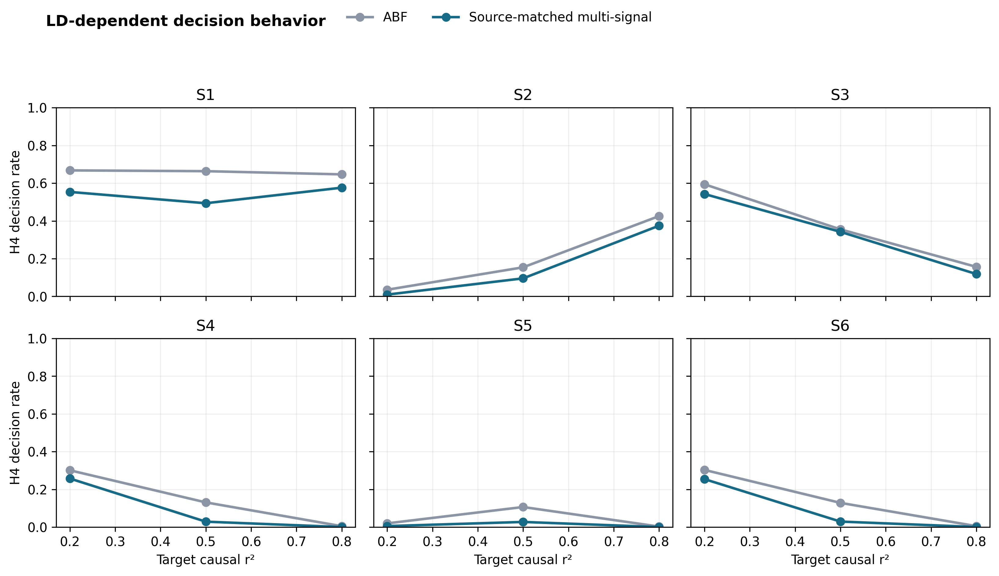
六小面板；r²=0.2/0.5/0.8；两方法无条件H4率曲线。
数值：S2 distinct在r²升高时误共享上升；复杂共享S4/S6在高r²下H4恢复很低。
只涵盖冻结模拟模板/参数网格；不等于真实人群所有LD情形或经验错误率。
PDF · PNG
Fig3 · R7B1C/Figure_R7B1C_3_same_locus_LD_mismatch
HISTORICAL_PROTOTYPE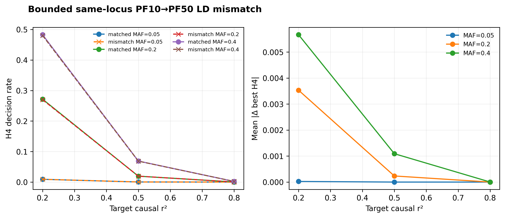
左matched/mismatch的MAF分层H4率；右mean absolute best-H4变化。
数值：MAF0.4/r²0.2：H4 0.4828 vs 0.4803，mean|ΔH4|≈0.005665；仅9个MAF×r²汇总。
同位点PF10→PF50的有边界错配压力测试，不是跨祖源LD基准，也不是所有LD不匹配损害的估计。
PDF · PNG
Fig3 · R7B1C/Figure_R7B1C_4_credible_set_coverage
HISTORICAL_PROTOTYPE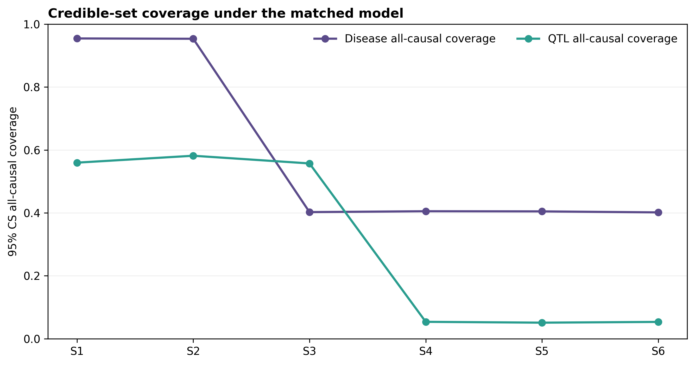
疾病和QTL在六场景的95% credible-set all-causal coverage曲线。
数值：Disease S1/S2≈0.95、复杂场景≈0.40；QTL S1–S3≈0.56、S4–S6≈0.05。
名义95% credible set不是观察到95% all-causal覆盖；all-causal判据和拟合可评价性须保留。
PDF · PNG
Fig4 · R7C3B/Figure_4
CURRENT_SUBMISSION_CANDIDATE_REFERENCE_COPY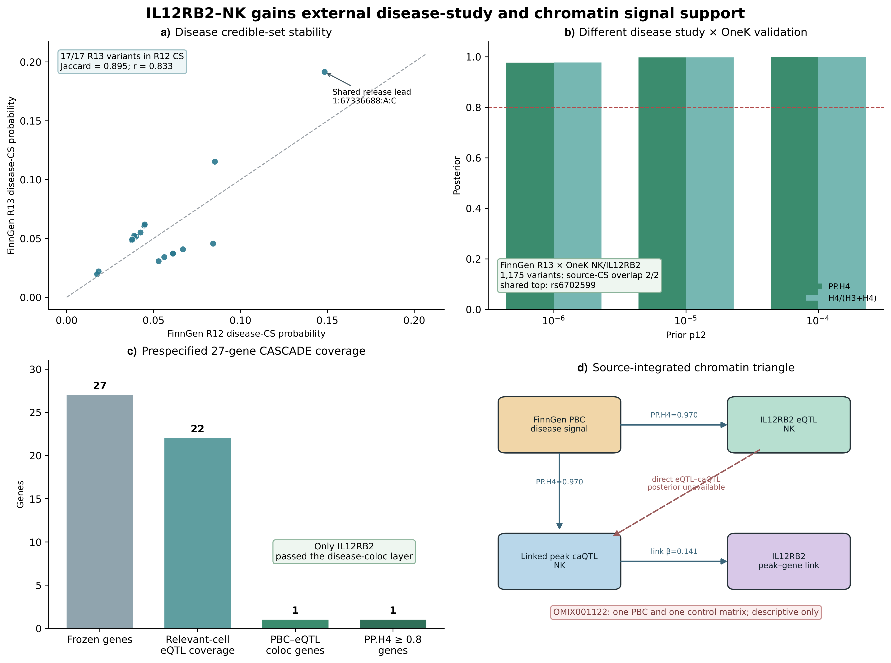
FinnGen R12/R13可信集、R13×OneK、27基因CASCADE覆盖和染色质三角。
数值：17/17 R13 CS variants进入R12 CS；1175共有变异；27→22→1；disease-eQTL/caQTL H4≈0.970。
R12/R13不是两个独立队列；未证实参与者完全无重叠；直接eQTL-caQTL posterior缺失；OMIX仅描述。
PDF · PNG
Fig5 · R7C3B/Figure_5
CURRENT_SUBMISSION_CANDIDATE_REFERENCE_COPY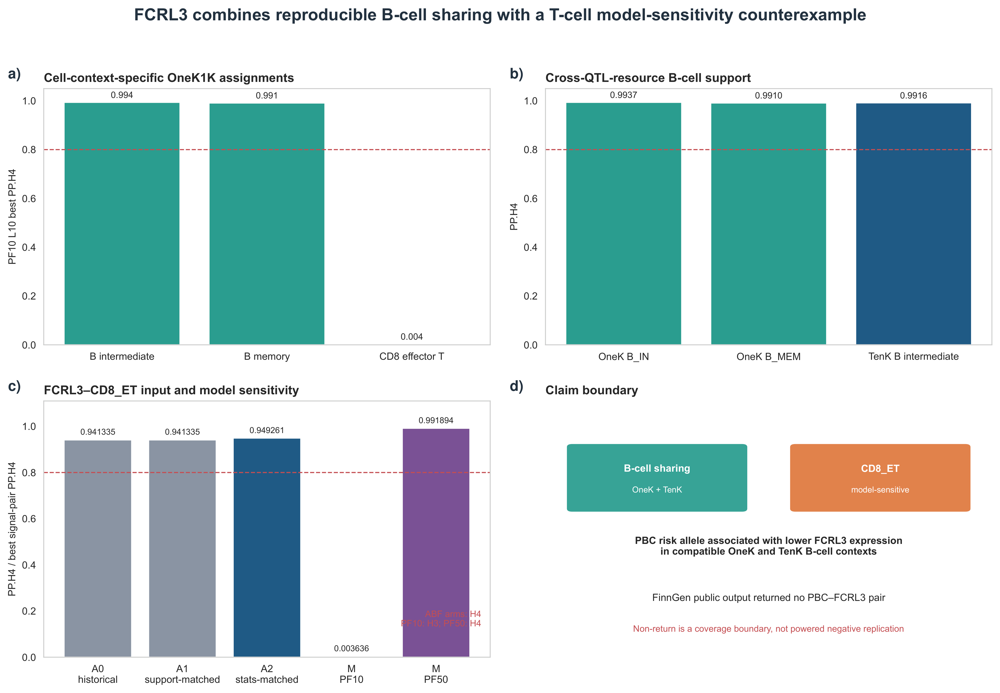
B-cell sharing、跨QTL资源、CD8_ET A0/A1/A2/PF10/PF50对照及claim boundary。
数值：FCRL3 B_IN≈0.9937、B_MEM≈0.9910、TenK≈0.9916；CD8_ET PF10≈0.003636 vs PF50≈0.991894。
独立分子QTL资源复用同一疾病GWAS；PF50高H4不证明恢复真值；FinnGen未返回不等于有power阴性复制。
PDF · PNG
Fig5 · R7B1B_v2/Figure_R7B1B_3_cell_context_reclassification
HISTORICAL_PROTOTYPE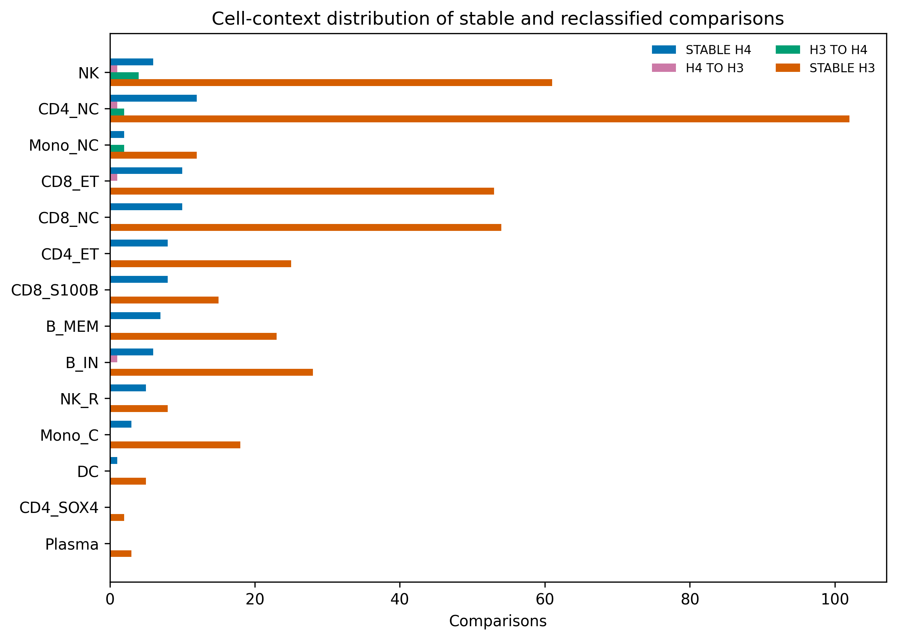
十四细胞按stable H4/H3、H4→H3、H3→H4四类水平条形分布。
数值：只展示历史strict/stable四类499比较；NK H3→H4=4，CD4_NC=2，Mono_NC=2；不展示全部143其它结局。
跨细胞计数不是样本量独立复制；未对每个cell universe做新的多重检验；阶段历史定义。
PDF · PNG
Fig5 · R7A1B/R7A1B_PBC_signal_gate_summary
HISTORICAL_PROTOTYPE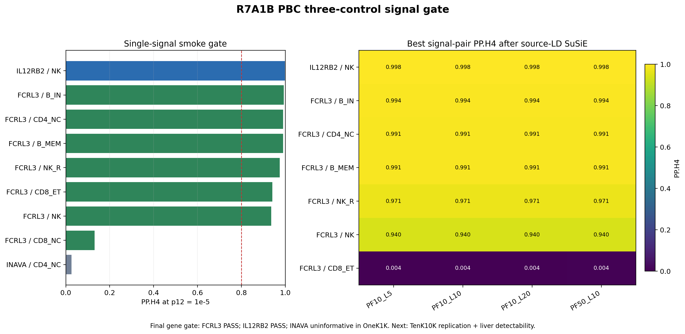
左：九比较ABF smoke；右：七比较PF/L配置的最佳signal-pair H4。
数值：IL12RB2/NK≈0.998；FCRL3/B_IN≈0.994；CD8_ET≈0.004；INAVA弱/无信息。
图中的历史PF10/PF50列不能代表当前同源双模型。R7B0A记录历史PF10字节身份未恢复，后续current-release de novo结果才是当前依据。
PNG
Fig6 · R7C3B/Figure_6
CURRENT_SUBMISSION_CANDIDATE_REFERENCE_COPY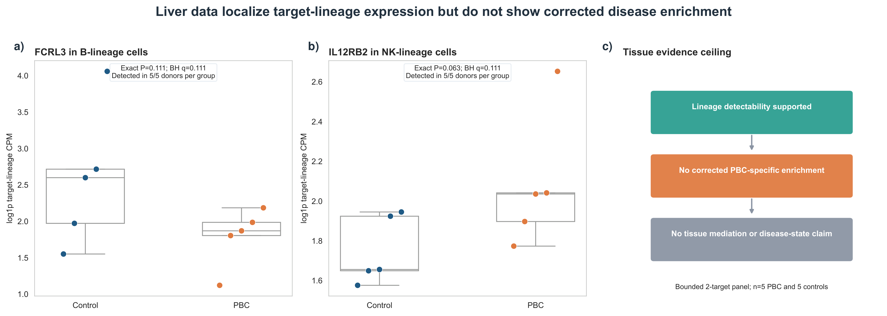
FCRL3-B、IL12RB2-NK log1p(CPM)供者点/箱线及组织证据上限。
数值：每组5人；两gene每组5/5检测；P≈0.111/0.063；两者BH q≈0.111。
可检测性支持；校正后疾病富集未支持；不能推断组织介导或新治疗机制。
PDF · PNG
Fig6 · R7A2A1/R7A2A1_PBC_vs_control_target_panel
HISTORICAL_PROTOTYPE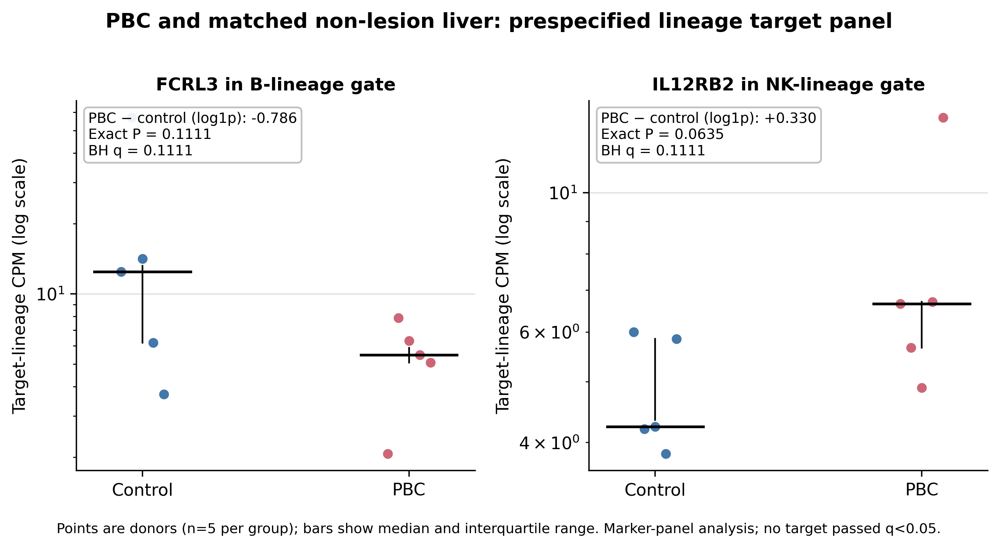
两个target-lineage面板；每点一供者；CPM对数坐标，中位数与IQR。
数值：5 PBC vs 5 controls；FCRL3 log1p差=-0.786，P=0.1111；IL12RB2差=+0.330，P=0.0635；两者q=0.1111。
此图是log轴原始CPM；当前Fig6为log1p(CPM)展示。数值/供者来源相同，画法不同。未支持校正后PBC特异富集或组织介导。
PDF · PNG · SVG
Fig7 · R5A2A4/Figure_R5A2A4_NK_R_ZCCHC2_adjudication
ARCHIVED_DIFFERENT_DISEASE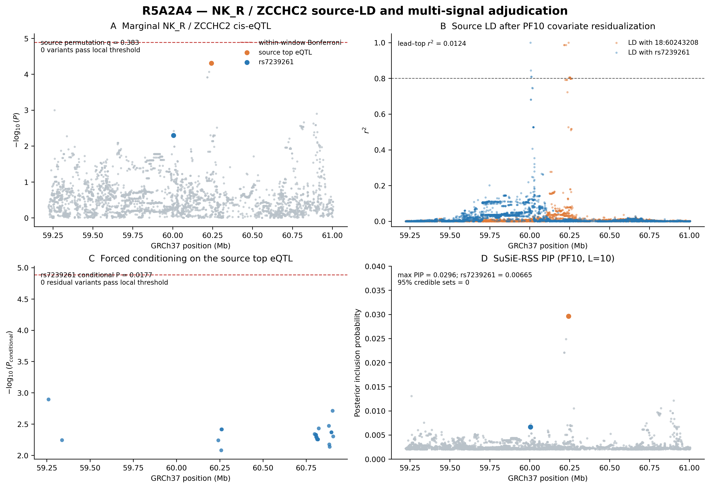
A 区域边际eQTL；B disease lead与QTL top的残差化LD；C 强制条件分析；D SuSiE PIP。
数值：source q≈0.383；lead-top r²=0.0124；条件P≈0.0177；max PIP≈0.0296；95% CS=0。
MG而非PBC；未发现可信QTL共享信号。不能把无CS当作全疾病位点无遗传效应。
PDF · PNG
Fig7 · R5A2B/Figure_R5A2B_chr5_bounded_adjudication
ARCHIVED_DIFFERENT_DISEASE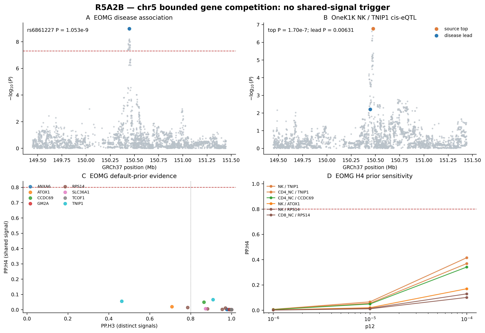
A EOMG关联；B NK/TNIP1区域eQTL；C 八基因H3-H4散点；D p12敏感性。
数值：rs6861227疾病P≈1.053e-9；NK/TNIP1 top P≈1.70e-7，lead P≈0.00631；图中无H4过0.8。
强疾病关联或强QTL不等于共享信号；这里只是已终止MG表达介导路线的冻结终裁。
PDF · PNG
Fig8 · R6A1/Figure_R6A1_preflight_overview
ARCHIVED_DIFFERENT_DISEASE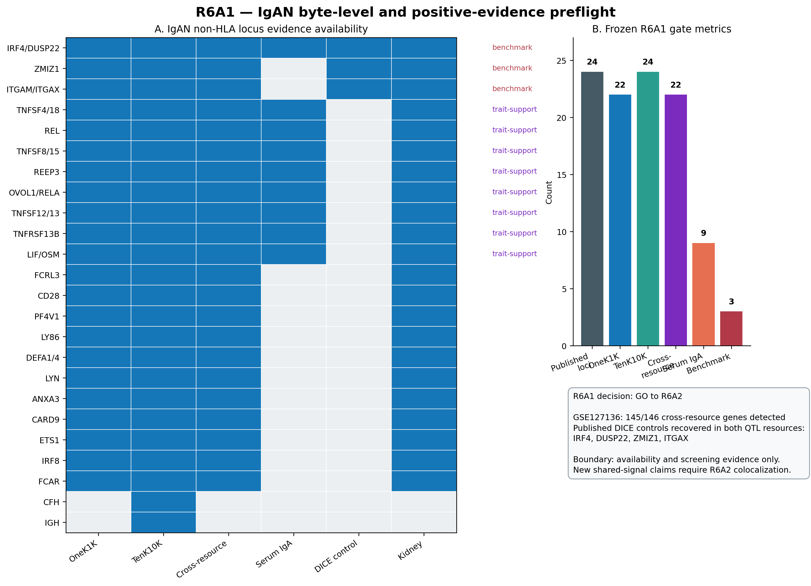
A 24个非HLA位点跨QTL/serum IgA/肾组织的资源覆盖；B 初始GO门计数。
数值：24 published loci、22 OneK、24 TenK、22 cross-resource、9 serum IgA、3 benchmark。
覆盖/存在不是疾病共定位。图中文字“DICE controls recovered”属于早期定义，后续R6A2A0已纠偏，不能当作恢复了4基因3位点阳性。
PDF · PNG
Fig8 · R6A2A1/Figure_R6A2A1_benchmark_and_ZMIZ1_replication
ARCHIVED_DIFFERENT_DISEASE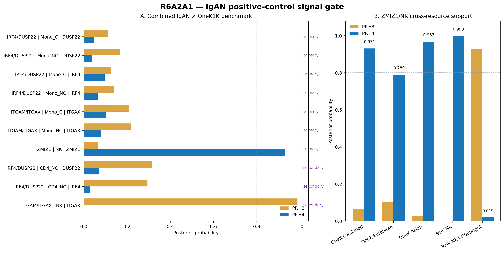
A combined IgAN与OneK预定正控H3/H4；B ZMIZ1在祖源及TenK NK亚群中对照。
数值：ZMIZ1：OneK combined H4≈0.931、European≈0.789、Asian≈0.967；TenK NK≈0.998，NK CD56bright≈0.019。
European未达到默认0.8；不同NK亚群不能合并成一致阳性；跨QTL资源不是新增独立疾病GWAS复制。
PDF · PNG
Fig8 · R6A2B0/R6A2B0_decision_summary
ARCHIVED_DIFFERENT_DISEASE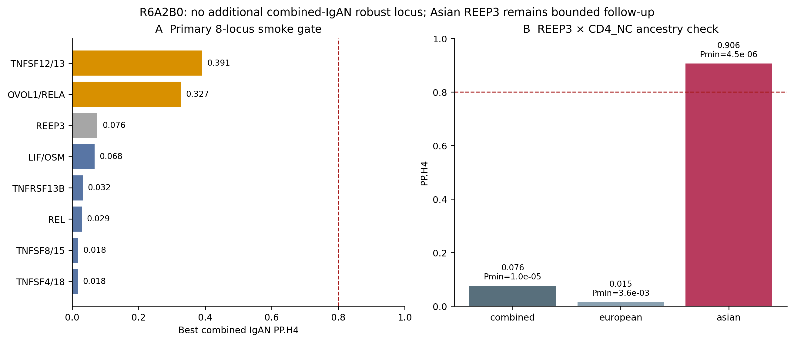
A 八个预定locus的最佳combined H4；B REEP3/CD4_NC三祖源H4。
数值：八位点combined最高TNFSF12/13≈0.391；REEP3 combined≈0.076、European≈0.015、Asian≈0.906。
Asian高H4是当时的后续证伪触发，并非最终跨资源成功；后续R6A2C冻结结论优先。
PNG · SVG